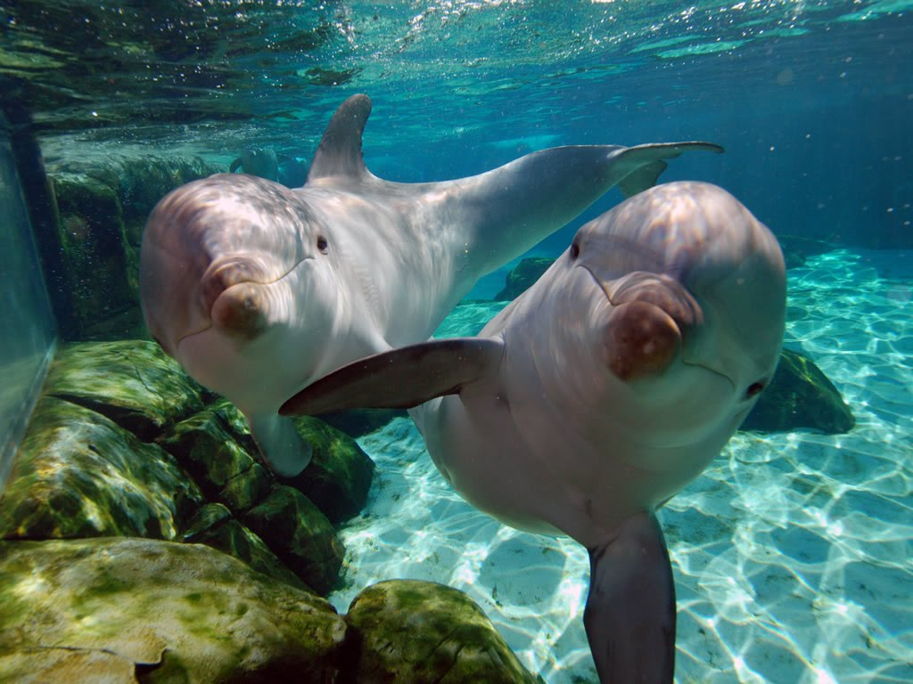

El agua es uno de los grandes condicionantes de la naturaleza, no sólo por su necesaria presencia sino también porque modifica la topografía o irriga y distribuye nutrientes. En las zonas frías el agua agranda año a año las grietas, arranca piedras y causa delizamientos producto de su congelamiento y dilatación; cuando hay nieve y avalanchas, el enorme peso es capaz de hacer desprender grandes rocas y de arrastrarlas hasta los valles.
Los delfines son mamíferos acuáticos que habitan en casi todos los mares del planeta. Aunque viven en mar abierto, también hay momentos en los que se aproximan a la playa, pero sin llegar a la orilla. Como todos los mamíferos, ellos ,también necesitan mantener la temperatura de su cuerpo, para lo que tienen una ancha capa de grasa bajo su piel. Existen 32 especies de delfines, entre las que destacamos el delfín común, el delfín listado, el delfín mular y la orca; su cuerpo es alargado con una aleta dorsal y dos laterales que cambian de forma y tamaño según la especie, éstas aletas les sirven para controlar la dirección al nadar,además de para girar. Lo mismo pasa con el hocico,ya que de esta forma tendrá una forma más alargada u otra más redonda También cuentan con una cola aplanada horizontalmente que utilizan para desplazarse y a veces para mantenerse de pie sobre la superficie del mar. Sus dientes son de forma cónica y los utilizan para atrapar y desmenuzar los alimentos.
Las ballenas son una de las criaturas más sorprendentes que viven en el planeta, y habitan todos los océanos del mundo. Las ballenas dentadas se alimentan de peces y pequeños mamíferos. Las ballenas dentadas comen varios tipos de peces, como atún, bacalao, salmón entre otros, y algunos pequeños mamíferos como focas.
Las tortugas marinas forman parte de los quelonioideos (Clasificación científica: familia Chelonioidea). Son reptiles de sangre fría y habitan en todos los océanos tropicales. Son exclusivamente marinas, pero tocan tierra solamente para anidar. Las tortugas marinas pueden nadar a velocidades de 27 a 35 km/h. Su fuerte cuello está formado por ocho vértebras y no pueden meterla dentro del caparazón como las tortugas terrestres. No poseen dientes pero sí unos picos cortantes en la parte superior de su mandíbula. Sus oídos no se ven a simple vista, pues los tiene de manera interna y son muy eficientes.